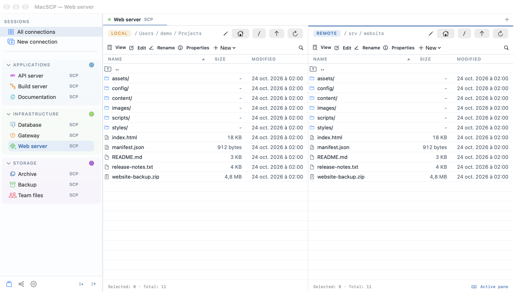
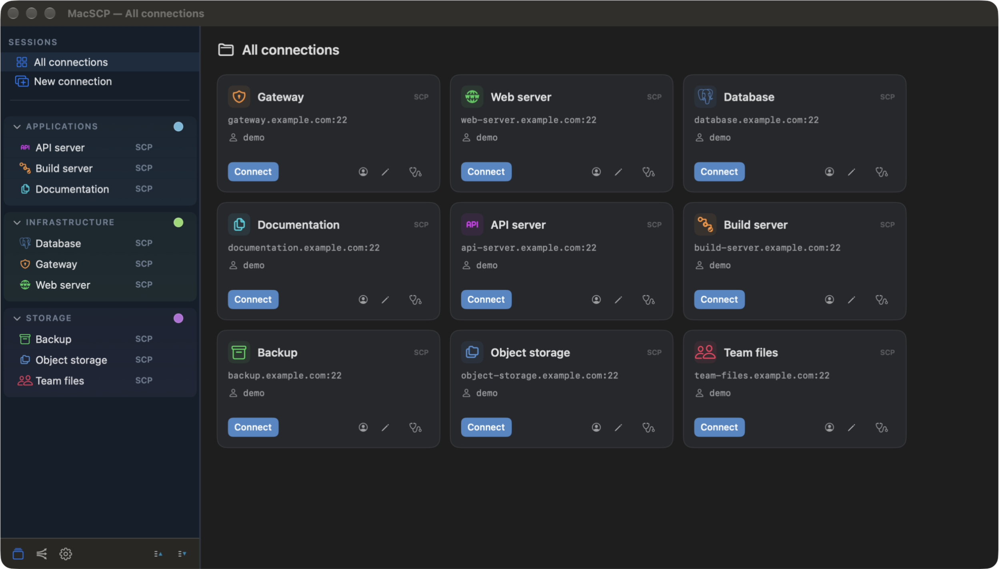
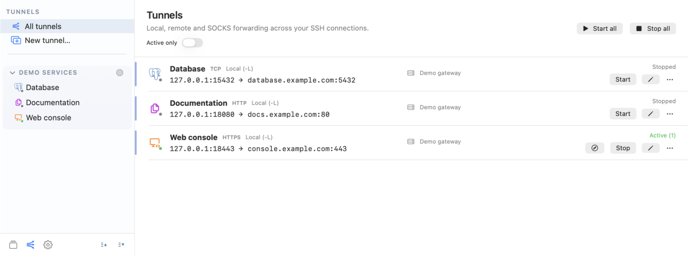

BROWSE & TRANSFER
Move data with control.
Use SFTP, S3-compatible storage or WebDAV. Queue transfers, resolve conflicts, limit bandwidth and verify checksums.
macOS 15+ / Apple Silicon + Intel / GPLv3+
OPEN SOURCEFOR SYSADMINS, PLATFORM TEAMS & INTEGRATORS
Browse, edit and transfer files between your Mac and remote systems. Pair two servers side by side, and manage SSH tunnels independently.
Native for macOS 15 or later.
Apple Silicon and Intel.

01 / DAILY REMOTE WORK
Files, configuration and deployment artifacts.
Without breaking your operational flow.
BROWSE & TRANSFER
Use SFTP, S3-compatible storage or WebDAV. Queue transfers, resolve conflicts, limit bandwidth and verify checksums.
EDIT REMOTELY
Edit UTF-8 configuration files, search SSH folders and inspect bounded text or hexadecimal previews. Save through the built-in editor or your external editor.
TWO REMOTES
Pair two SSH/SFTP sessions. Data passes through your Mac without sharing credentials, or copies directly when both panes use the same server and account.

Organize endpoints with nested groups, reusable logins, icons and custom colors. Import selected OpenSSH, Cyberduck and WinSCP configurations for review. The interface is available in seven languages.
02 / MANAGED SSH TUNNELS

Route what the job requires. Configure local and remote forwarding or SOCKS5. Reuse saved SSH connections, one optional jump host and supported TLS-gateway settings.
Operate one tunnel or a group. Start related mappings together, filter active tunnels and control them from the menu bar.
Keep services reachable. Tunnels use separate SSH connections, start automatically if configured and reconnect independently. Inspect an occupied local port before freeing it and restarting.
03 / OPERATIONAL TRUST
Security is expressed as observable behavior, not a badge.
Saved passwords and passphrases use macOS Keychain. Unknown SSH host keys require explicit confirmation; a changed key stops the connection.
Network access is limited to configured connections, signed update checks and optional public-IP discovery on your server.
Check endpoints and jump routes, trace failures, inspect server information and measure throughput. Optional audit logs exclude passwords, keys and file contents.
The public codebase is subject to repeated source-level security review. These reviews must not be interpreted as an independent certification. GitHub releases include provenance attestations; direct updates use signed Sparkle feeds and archives.
04 / GET MACSCP
Official installers and release notes are distributed through GitHub Releases, with provenance attestations and signed Sparkle updates.
The GitHub build is not Apple-notarized, so macOS may block the first launch. The release page provides the current download and installation instructions.
05 / DOCUMENTATION
Setup, operational workflows, security boundaries and practical limits.
Connections, remote editing, paired remotes, tunnels and diagnostics.
Features, fixes and maintenance changes by release.
Supported releases, security boundaries and private reporting.
Versioned dependencies, artwork and license notices.
06 / CLEAR BOUNDARIES
Choose the tool with the constraints visible, not hidden in fine print.
MacSCP supports SFTP over SSH, S3-compatible storage and WebDAV. FTP, SMB and AFP are not included. SSH connections support one jump host and supported TLS-gateway settings; multi-hop jump chains are not supported.
Packaged GitHub releases use signed Sparkle feeds and archives. Installation and relaunch require confirmation. Source builds can be inspected and rebuilt locally.
Use GitHub Issues for ordinary bugs, after removing credentials and private infrastructure data. For vulnerabilities, follow the security policy rather than posting exploit details publicly.